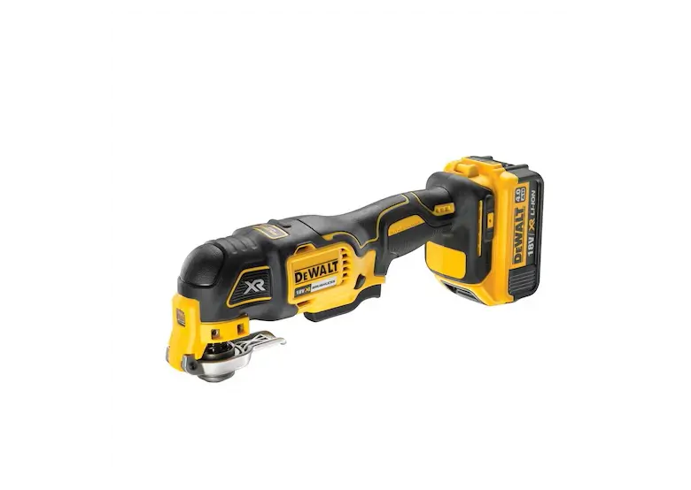

Wielofunkcyjne narzędzie oscylacyjne DeWALT DCS355
Wielofunkcyjne narzędzie oscylacyjne DeWALT DCS355 – praktyczny sprzęt do wszechstronnego zastosowania, kompatybilny z większością akcesoriów dostępnych na rynku.



W zestawie: Narzędzie + 2x bateria z ładowarką + akcesoria
| DANE TECHNICZNE | |
|---|---|
| Napięcie akumulatora | 18V |
| Kąt oscylacji lewo/prawo | 1.6° |
| Zakres ruchu części roboczej | 3.2° |
| Częstotliwość oscylacji na biegu jałowym | 0-20000 osc./min |
| Uchwyt narzędziowy | kompatybilny z systemem OIS/Starlock |
| Płyta szlifierska, długość boku | 93mm |
| Kąt oscylacji lewo/prawoWibracje | 16.1m/s² |
| Niepewność pomiaru | K: 1.5m/s² |
| Poziom ciśnienia dźwięku | 86dB(A) |
| Poziom mocy akustycznej (LwA) | 97dB(A) |
| Współczynnik niepewności pomiarowej K | 3dB(A) |
| Masa bez akumulatora | 1.1kg |